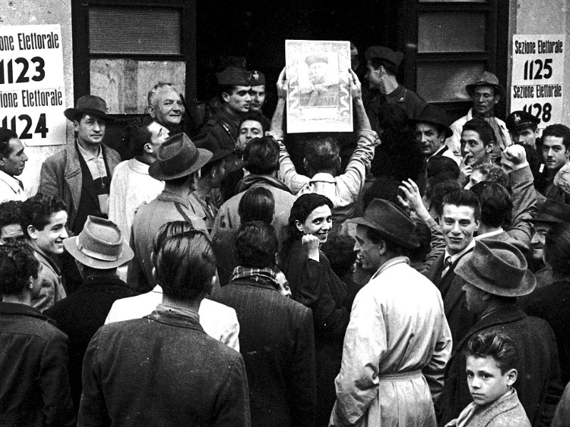

In storia il programma dell'ultimo anno è stato intenso, ma la parte che mi è piaciuta di più in assoluto è stata la ricerca di gruppo sulle prime votazioni delle donne in Italia tra il 1945 e il 1946. È stato un momento cruciale, in cui il Paese doveva rimettersi in piedi dopo il disastro della guerra e del fascismo.
Analizzando i documenti dell'epoca, in particolare le testimonianze della giornalista Anna Garofalo, abbiamo scoperto quanto fosse forte l'emozione di quei giorni. Le donne ricevevano le schede a casa e le custodivano come tesori preziosi. C'era un'immagine bellissima nella nostra ricerca che paragonava l'Italia di allora a una "casa in rovina" che le donne, con il voto, avevano finalmente il diritto e il dovere di ripulire e ricostruire da zero.
Vedere le foto storiche di quelle lunghe file ai seggi mi ha fatto riflettere. Per noi oggi votare sembra una cosa scontata, ma studiare questo percorso mi ha fatto capire che la libertà è stata conquistata con i sacrifici di chi è venuto prima. È stata una lezione fondamentale per sviluppare una coscienza critica, che mi servirà sicuramente anche per comprendere le dinamiche sociali nel mio futuro percorso in Economia.
